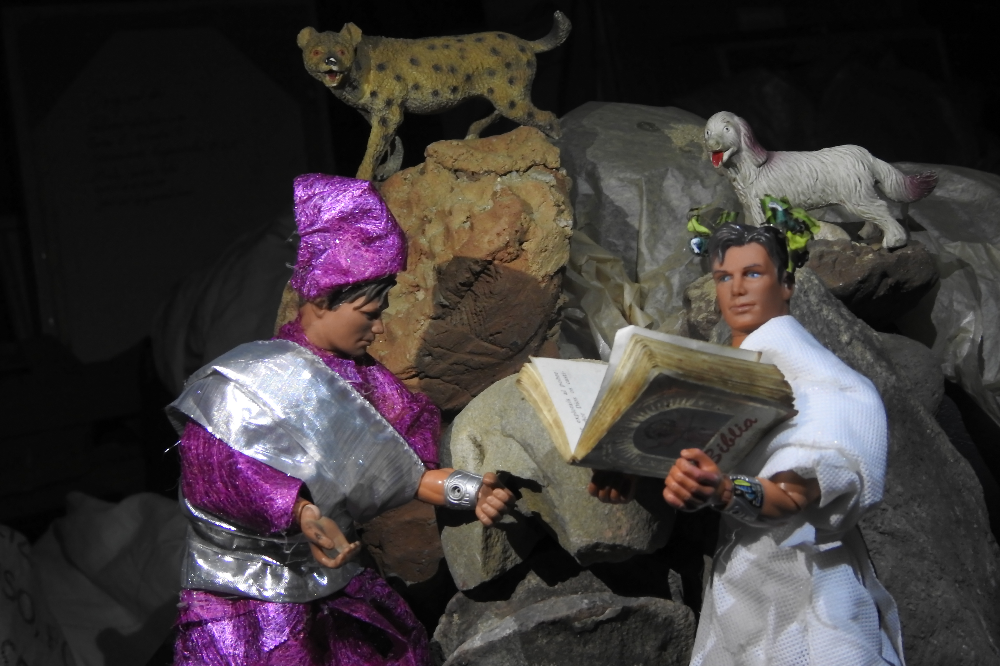

Canto 1: de noche

Esta foto usa una iluminación uniforme: usa una luz frontal (que también actúa como luz de relleno) y una luz a 45 grados a la izquierda de esta, las dos luces iluminando la escena completa por sí solas. No tiene un énfasis en específico: es solo para mostrar la maqueta completa, que también sirve como resumen para el canto.